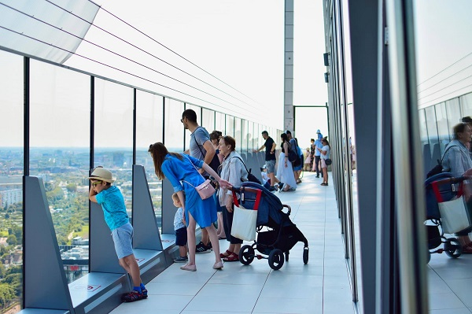
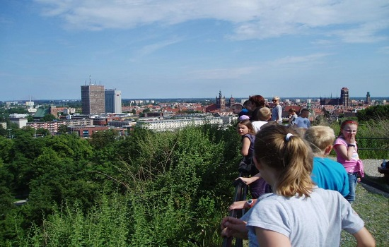

Najwyższy Taras Widokowy w Gdańsku - Olivia Star
30.12.2019 | 19:34:39 | MM
To najnowszy i zdecydowanie najwyższy taras widokowy nie tylko w Gdańsku, ale i w całym Trójmieście. Z 32 piętra macie okazję podziwiać panoramiczny widok niemal na całe Trójmiasto, aż po Półwysep Helski. Tylko tu możecie podziwiać pełną panoramę - widok 360 stopni zrobi na Was wrażenie! Piękne, nowoczesne wnętrza, spora przestrzeń wypoczynkowa zachęcają do wizyt o każdej porze roku. W Olivia Star organizowane są też cykliczne wydarzenia, w tym dla rodzin z dziećmi. To też świetne miejsce na rodzinny obiad z niezapomnianym widokiem, niezwykły zachód słońca czy wieczorne podziwianie iluminacji Trójmiasta.

Góra Gradowa
Najlepszy punkt widokowy w Śródmieściu Gdańska (46 m), położony na terenie dawnego Bastionu Jerozolimskiego będącego częścią XIX-wiecznych fortów obronnych. Tuż obok znajduje się Centrum Hewelianum - świetna atrakcja dla dzieci (połączenie parku nauki z interaktywną wystawą). Stoi tutaj Krzyż Milenijny. Całe Stare i Główne Miasto z najważniejszymi zabytkami widać stąd jak na dłoni.

Byłeś już w Gdańsku? Podziel się swoimi doznaniami z innymi!
Marysia | 10.03.2019| 19:39:01 Byłam polecam z całego serca!!
Papież | 10.03.2019 | 19:40:00 Było super
Komentarze czytelników